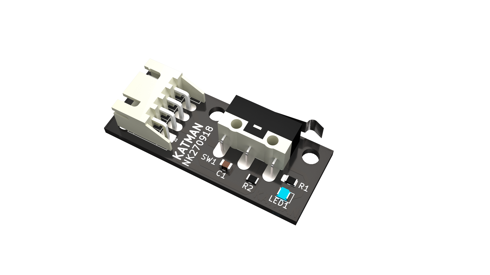
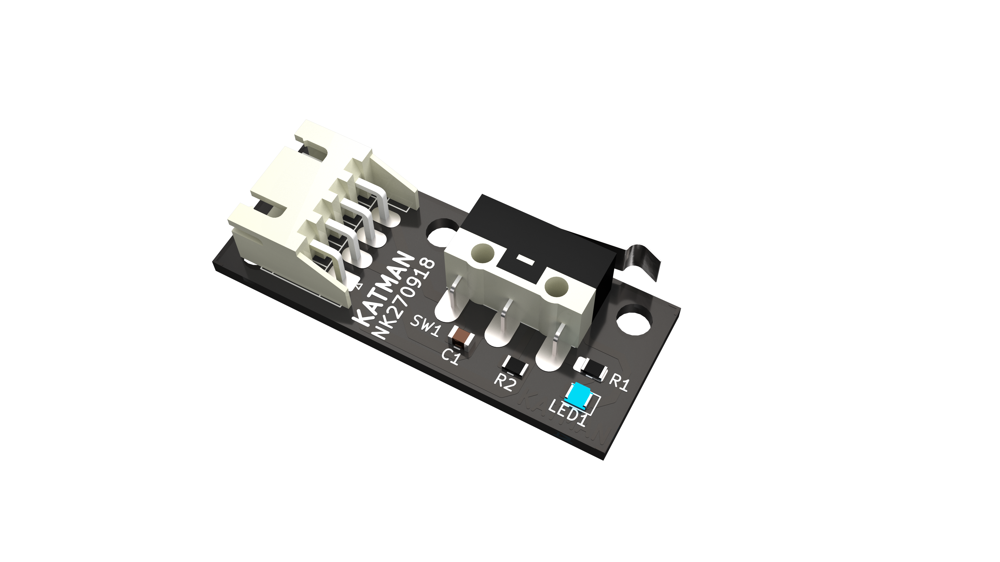

Katman SWC¶

Yerli üretim Katman Limit Anahtarı ile makinelerinizin eksenlerinde sınır kontrolünü yapabilirsiniz.
Bilgi kitapçığı için :download:tıklayınız <Katman SWC broşür.pdf>.

Yerli üretim Katman Limit Anahtarı ile makinelerinizin eksenlerinde sınır kontrolünü yapabilirsiniz.
Bilgi kitapçığı için :download:tıklayınız <Katman SWC broşür.pdf>.